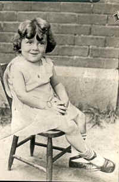
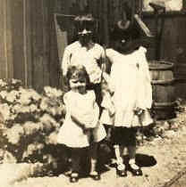
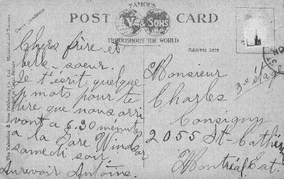
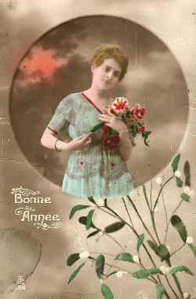
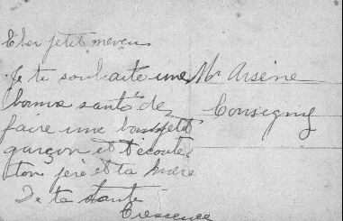

|
|
THE
DESCENDANTS OF CHARLES AND ÉZILDA
Charles and Ézilda had five children. Arsène, born February 10,
1921. His godfather was Antoine Consigny and his godmother Ernestine Consigny, the child's aunt
and uncle.
Arsène married Marthe Chaput on December 21, 1946. Fabiola,
born October 4, 1922. Her godfather was Joseph Roch, a shoemaker in Maisonneuve,
and her godmother his wife, Docilia Côté, the child's aunt.
Fabiola married Elphège Daoust on June 29, 1946.  Jacqueline,
born August 7, 1926. Her godfather was Onésime Desjardins and her godmother
his wife, Blanche Côté, the child's aunt. (Photo opposite.
N.B. Francine still has this little child's chair)
Jacqueline married Gérard Charette on June 29, 1946; her godfather was her
witness.
Jeanne,
born September 13, 1929. Her godfather was Azarias Côté, the child's uncle, and her godmother Jeanne
Perreault.
Jeanne died on June 13, 1936, and was buried on June 22 in the Cimetière de
l'Est. Why such a delay??... The witnesses on the burial record were her father and her godfather. Jacqueline
often told how her little sister used to say "me, I'll never go to
school". And indeed, she died at home shortly before
she was to start school. She is said to have "lost buckets of
blood and grown quickly, in just a few days, so much that the coffin that had been
brought to the house for her was too small..." It is far
from a precise diagnosis, but it is the story handed down by
Jacqueline and Ézilda, born of their memories of the hard times
they lived through during little Jeanne's illness and death. (a memory of Nicole's, who heard this
story told more than once)
Aurise,
born January 5, 1933. Her godfather was Émilien Côté, the child's
uncle, and her godmother Aurise Roch. Émilien was still single, and
the godmother was probably a niece, a daughter of Docilia Côté-Roch, sister
of Ézilda and Émilien.
Aurise died on March 1, 1933; she was buried in the Cimetière
Notre-Dame-des-Neiges on March 2.
|
|

Charles on the balcony
with one of his children
|

Arsène, Fabiola and Jacqueline around 1928, in the backyard of 2179
Létourneux
|

Jeanne and Jacqueline on the front
balcony of 2179 Létourneux
|
|

(Click on this photo to
see them full size)
Around 1938, the Consigny family on a
picnic
In front, Jacqueline and Fabiola.
Standing, Charles, Ézilda and Arsène.
This photo was taken on a Sunday
or a holiday, at the Botanical Garden or in Parc Maisonneuve,
very close to their home.
It was a chance
to see the relatives, since in fact all the Consignys and
Côtés lived in Maisonneuve, but they could not afford to have everyone
over at once in their small flats. I once saw a group
photo from this same picnic.
A picnic where people
had fun, ate well, saw the relatives and got some fresh air.
It was the summer activity par excellence for people who did not
have the money, or the transportation, for cottages in the
country.
Jacqueline kept her taste for picnics and organized them for her
children, at Saint-Luc or on Île Sainte-Hélène, and elsewhere now and
then.
|

Still the same day, Ézilda is wearing
an apron; she is getting the meal ready. In those days there was no "ready-to-eat"
food, and picnics were a real meal eaten outdoors. She must
not stain her dress, which would spoil her outfit for the rest of the
day. Besides, washing was a hard chore, done every
Monday, and people had few clothes (there was only one small
wardrobe for everyone in the flat).
|
|

|
|
POSTCARDS ADDRESSED TO THE CONSIGNY
FAMILY |


Monsieur Charles Consigny
2055 St-Catherine 3rd floor
Montréal Est
Dear brother and sister-in-law.
I'm writing you a few words to tell you that we arrive at 6.30 minutes
at Windsor Station Saturday evening
Goodbye, Antoine
A card from Antoine, Charles's
brother. In those days people wrote to each other, since the telephone
was not yet very widespread. This card dates from the early
1920s, because the address is that of Ézilda's mother, Georgiana Côté, with
whom the young couple no doubt lived until they moved
into their flat at 2179 Létourneux in 1925.
Note that Antoine married Ernestine Leroux in Maisonneuve on November
17, 1920, and
also settled in Montreal. This card may announce their
return from a honeymoon spent in Quebec City.
|
|
|
The two cards below
are New Year's greeting cards sent from Quebec City
by Crescence, Mrs.
Rolland Pleau, to her brother Charles and her nephew Arsène.
These cards date from the second half of the
1920s. Crescence and Rolland lived first in the Saint-Sauveur district, then
in Limoilou. Crescence is said to have died in the late 1940s,
and Rolland remarried in 1950 (Ref: BMS2000). |
|


Dear Brother
Happy and prosperous
New Year health,
work so you can earn a lot, and the fulfilment of
all your wishes Your sister Crescence


Dear
little nephew
I wish you
good health, to be
a good
little boy and to listen to your father and mother
From your aunt Crescence
|
|

|
|
 AT THE
CONSIGNYS'
AT THE
CONSIGNYS'